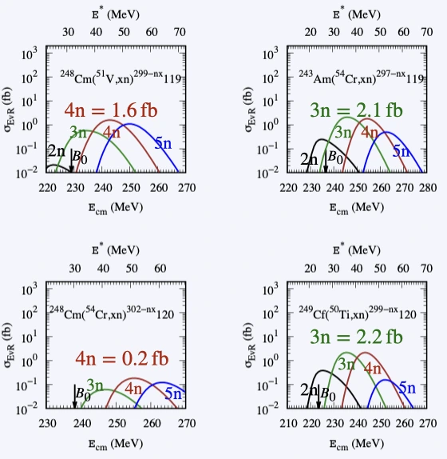

KEWPIE3 is a C++ code for fusion–evaporation reactions in heavy-ion collisions. It calculates evaporation-residue cross sections for the synthesis of heavy and superheavy nuclei, as the product of capture, compound-nucleus formation and survival. It refines the KEWPIE2 cascade code, which describes the survival of the excited nucleus, with an implemented and calibrated formation step based on Langevin dynamics.
Projects › KEWPIE3
KEWPIE3
A computational framework for fusion–evaporation reactions and superheavy-element synthesis.
What is KEWPIE3?
Research Problem
Only a small fraction of heavy-ion collisions produce a surviving superheavy nucleus, with cross sections down to the picobarn range and below. Experiments aimed at elements such as Z = 119 and Z = 120 therefore depend on theoretical predictions to choose reactions and beam energies.
The least certain factor in these predictions is the probability that the touching system forms a compound nucleus instead of re-separating by quasifission. Key question: how can the calculation of the compound-nucleus formation probability be improved with Langevin-based stochastic approaches?
Scientific Framework
Three stages
The evaporation-residue cross section is the product of the three stages below, summed over partial waves.

Capture
Do the two nuclei get close enough to touch? Transmission of each partial wave through the barrier, in the WKB approximation with the HIVAP potential model.
Compound-nucleus formation
Does the touching system fuse, or re-separate by quasifission? Langevin dynamics from an injection point, with friction. This is the step added in KEWPIE3.
Survival
Does the hot compound nucleus cool by emitting particles before it fissions? A statistical decay cascade of neutron, charged-particle and gamma emission against fission, following the KEWPIE2 code (H. Lü et al., Comput. Phys. Commun. 200, 381 (2016)).
Model Development
Fusion-by-diffusion
Formation is described as a stochastic process in which the surface separation of the two nuclei diffuses over the barrier. In the overdamped limit used by fusion-by-diffusion the residual kinetic energy is fully dissipated.
Langevin dynamics
Analysis of the reduced friction coefficients suggested that the dynamics is not fully damped, so a full one-dimensional Langevin formalism was implemented and applied to hot-fusion data.
KEWPIE3 implementation
The formation step was implemented in the KEWPIE2 code for the first time, with both the overdamped and the full Langevin formalisms. The formation and survival steps were tested against the fusion-by-diffusion model for sets of 27 cold-fusion and 24 hot-fusion reactions (doctoral thesis).
Calibration and Sensitivity
Calibration strategy
The formation stage has two free parameters, the injection-point distance s0 and the friction strength beta_ss. They were fitted to measured cross sections for nine 48Ca-induced hot-fusion reactions (compound nuclei 285Nh to 297Og; Dubna, GSI and LBNL data) by Gaussian-process Bayesian optimisation of an uncertainty-weighted logarithmic objective. The fit gives s0 = 6.65 fm and beta_ss = 1.16 × 1021 s−1.
Parameter variation
The nuclear-model configuration was chosen from a 96-configuration factorial study of discrete settings, such as the level-density model, shell damping, fission friction and the Kramers factor. A profile scan of beta_ss tests whether the data constrain it.
Uncertainty and sensitivity analysis
The confidence region of the fit is traced by direct evaluation of the Δχ² surface. The two parameters are strongly anti-correlated, and the shaded bands in the figures show the response along that compensation direction. They are not a full uncertainty estimate: sensitivity to the calibration data and to the nuclear-structure inputs was studied separately and is not included.
Computational Framework
C++, GSL and OpenMP
A C++ engine with modules for capture, formation and survival, built on the GNU Scientific Library. The loop over beam energies runs in parallel with OpenMP. One input file selects the reaction, the energies and the mode, and Python and gnuplot tooling reads the same file to fit, plot and trace uncertainty.
Optimisation
Two optimisers are available: a random search refined by Newton–Raphson, which gives the Hessian and one-sigma errors, and Bayesian optimisation with a Gaussian-process surrogate. An error-weighted logarithmic chi-square gives statistically calibrated uncertainties.
MPI and multi-Mac computing
Parameter sweeps and single fits can be distributed across several machines with MPI, and the results are collected into one ranked table. MPI is optional, and a single-machine run needs only the compiler, GSL and gnuplot.
Results
Validation
The calculation reproduces the broad magnitude and energy dependence of most excitation functions for 48Ca-induced reactions on targets from 237Np to 249Cf. The median ratio of calculated to measured cross section at the channel maxima is 1.19, and 29 of 30 entries are within one order of magnitude. Agreement varies by reaction and channel, and these are descriptive statistics, not an independent validation.


Representative predictions
Cross sections calculated with the same calibrated parameters, without refitting, for four reactions not yet measured: 248Cm(51V,xn) and 243Am(54Cr,xn) towards Z = 119, and 248Cm(54Cr,xn) and 249Cf(50Ti,xn) towards Z = 120. The predicted cross sections are of the order of a femtobarn, which is an experimental challenge. They extrapolate to different projectiles, and the bands do not include that additional uncertainty.

Sensitivity findings
In the factorial study, the Kramers stationary factor accounted for most of the variation in fit quality (η² = 0.906), and the temperature correction to the fission barrier had no measurable effect. A smaller fission friction gave a slightly worse fit but a much more stable one (analysis notebook in the code repository). A full, published sensitivity analysis is in progress.
Current Development
Validation and publication of KEWPIE3 are in progress. Two manuscripts are in preparation: one revisiting the fusion dynamics in the fusion-by-diffusion model, and one on uncertainty analysis of nuclear reaction models. The code was last updated in September 2026.
Publications and Technical Reports
- Doctoral thesis: Study of reaction mechanisms for the synthesis of superheavy elements, University of Caen Normandy (2024)
- Manuscripts in preparation: KEWPIE3; fusion dynamics; uncertainty analysis of nuclear reaction models
- Technical documentation: code overview and user guide, maintained with the code
- Software: KEWPIE3 (C++ with Python tooling); the repository is not yet public
- All publications →